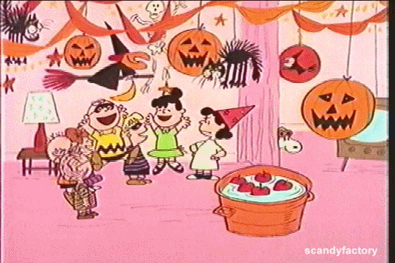

How Sweet It Is
June 30, 2021
Kate Sweet is an event planner who loves to create happily-ever-after moments for her clients' weddings. Her best friend Imani needs help and convinces Kate to take on bestselling horror writer Drake Matthews' Halloween book launch event. Drake Matthews is tired of being known as the Knight of Nightmares, tired of the downsides of fame, and worse, he's suffering from writer's block. He's not prepared to meet Kate Sweet and her chaos.
I found myself flying through this lighthearted book. From the moment Kate and Drake met, hijinks of romantic comedy proportions ensued. I found it really funny that Kate is introduced as someone who plans events down to the minute that moments happen, but was just nothing but chaos once she was supposed to plan the Halloween book launch event. It was fun to see Kate wanting to go all out and Drake trying to reign her in.
I liked how Kate and Drake's personality traits were shown to be double-edged swords - showing both the positives and negatives of qualities like Kate's stubbornness and Drake's perceptive nature. I also enjoyed seeing how Kate and Drake's perceptions of people around them combined with their own history would affect the way they'd behave - the way that they'd form assumptions about each other but had a pretty healthy communication rather than sit with the assumptions was refreshing to read. I appreciated that the final culminating conflict was not due to a misunderstanding (the issue was correctly communicated to the character in question), but the character actually needed some of the supporting characters they trust to speak some sense into them. That seems to be much more realistic in terms of conflicts of this nature and how they'd get resolved in the real world. It was interesting that the reveal at the end from Kate's parents came off as a reveal to Kate, as I interpreted their request correctly from the very beginning, but I can understand how sometimes it might be easier to avoid the topic of subjects that you don't want to broach with your parents rather than push back. I also loved all the supporting characters, who were vibrant and didn't hesitate to tell the main characters their opinions.
I love the grumpy x sunshine trope, and it was especially fun to see how Kate's sunshine personality becomes Drake's muse as the story progresses. When I write, I imagine the scenes playing out (sometimes while doing other important things in real life), so it was fun to see that in common with Drake. The romance build-up, from just casual details they would notice of each other up until the "awww" moments, was fun to watch.
Thank you to Forever (Grand Central Publishing) and NetGalley for the ARC.

More about How Sweet It Is here:

Title: How Sweet It Is
Author: Dylan Newton
Event planner Kate Sweet is famous for creating the perfect happily-ever-after moment for her clients’ dream weddings. So how is it that her best friend has roped her into planning a bestselling horror writer’s book launch extravaganza? But the second Kate meets—or rather, accidentally maims—the drop-dead-hot Drake Matthews, her well-ordered life quickly transforms into an absolute nightmare.
Drake Matthews is tired of the spotlight and tired of his reputation as the Knight of Nightmares. He's really a nice guy! But he’s not prepared for Kate, a fearless agent of chaos in steel-tipped stilettos, or for that sweet sting of attraction he feels for her. She’s inspiring him to take his writing in a whole new direction—one that no one expects. Because now Kate and Drake are changing up the rules, and this plot twist might just surprise everyone . . . including themselves.